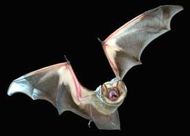

Bats have fair night vision ? they are not blind, contrary topopular belief. But nature's best flying insect control primarilyrelies on sound to track and catch its prey. As they fly throughthe night, insect-hunting bats emit a pulsating stream ofhigh-frequency squeaks and clicks through either their nose ormouth, depending on the species. When the sound waves strike anobstacle ? a tree limb or a mosquito ? they bounce back to the batas echoes. The bat instantly processes the data and respondsaccordingly; swerving in the case of the branch, attacking in thecase of the mosquito, and often doing both at the same time. Thissonarlike system, called echolocation, is amazingly sophisticatedand precise: An echolocating bat can detect objects as small as ahuman hair; it can use riverbanks, vegetation and other terrainfeatures as acoustic landmarks; and it can determine not only atarget's speed and direction, but also its size and surfacetexture. Researchers have found that bats can perceive an object'sposition and its 3-D form. The echo from a deciduous tree isdifferent from the echo of an evergreen. The echo from anunappetizing hard-shelled beetle is different than that from atender gnat.
As a bat searches for prey, it sends out a relatively low number ofsound pulses; typically about 10 per second. When it detects preyand flies closer, it speeds up its clicks and shortens theirduration. Just before the bat strikes, the pulses may be only afraction of a millisecond long and may number as many as 200 persecond; scientists call this a 'feeding buzz.'
Most bat sounds are well above the range of human hearing, so we'renot aware of the volume of their screams. Bats that hunt in theopen, such as the big brown bat, generate amazingly high-volumesound: 110 decibels measured at 4 inches from the bat's mouth ? theloudness of a smoke detector 4 inches from your ears. Bats thatforage in closer quarters, such as a forest, emit low-intensitysound: about 60 decibels, or the level of normal humanconversation.
To read more about these amazing creatures, check out TerryKrautwurst's story, 'Fantastic Bats,' in the October/November 2005issue of Mother Earth News.
|
 |
|
|